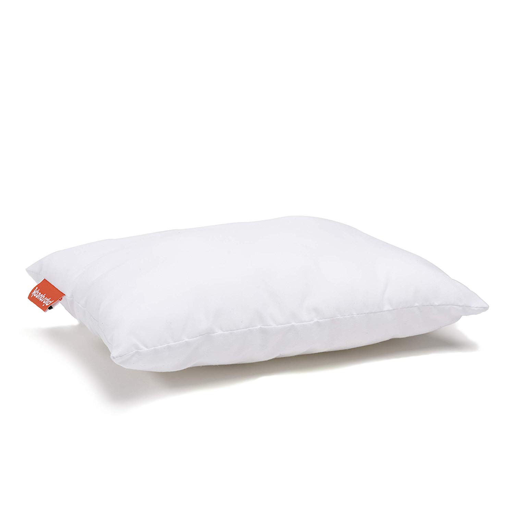
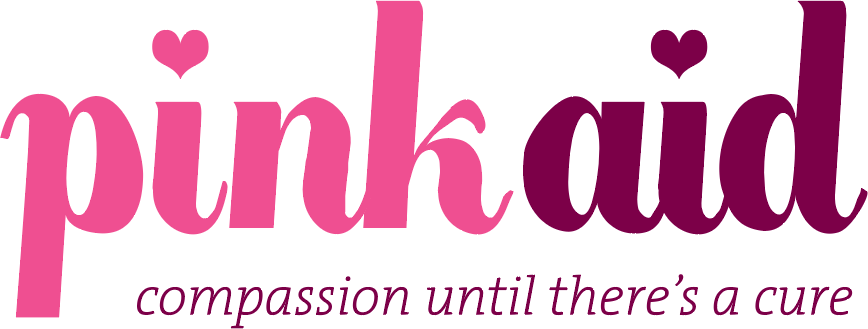
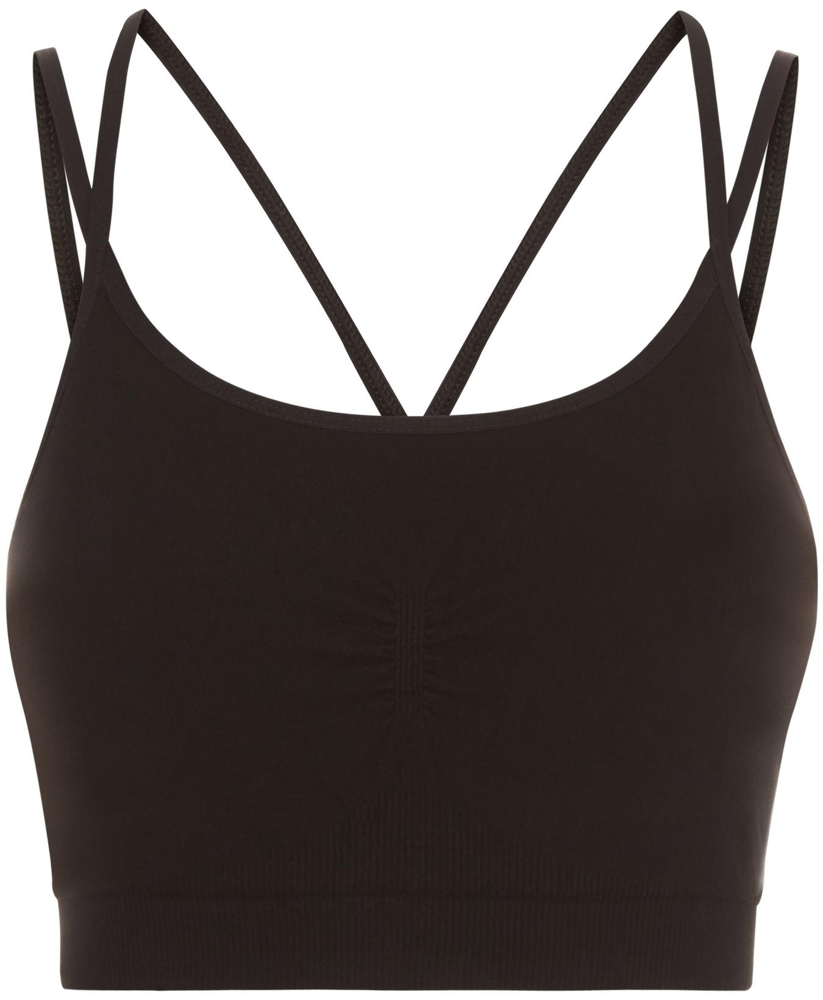
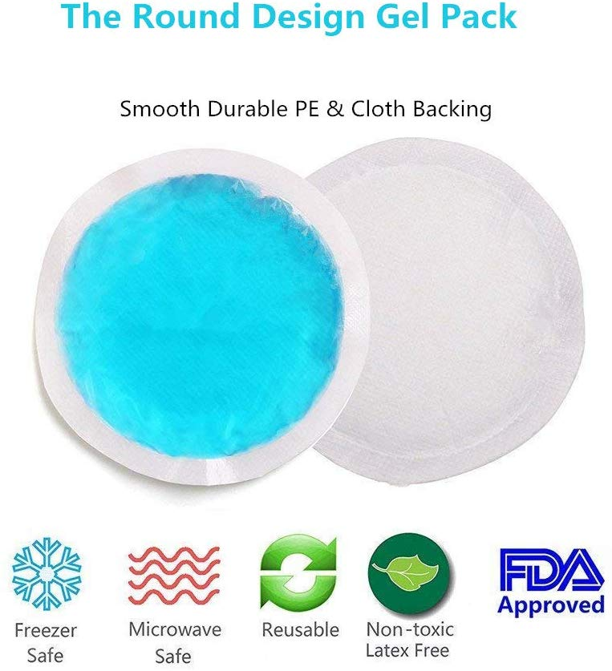

I found small pillow under my arm after surgery incredibly helpful! It is very durable and at a good value.
There are also other brands but I tried 3 and this is the best.
I would also suggest hot packs if you feel really sore.
You can buy one here!

YOU ARE NOT ALONE! BC is so common. Here is a great website to help people who need financial help.
Click Here!

Firstly, you are not alone, and you can do this. I took a friend to every one of my Drs appointment,
for support, but also because I sometimes didn’t hear everything because my mind was racing.
It was helpful to go back to that friend as I weighed my options. You can also record on your phone so you can go
back to listen if needed. Pre surgery (lumpectomy) my friend had told me to get large button up shirts and a loose
low support sports bra. I wore XL men’s button up dress shirts and Sweaty Betty made great soft bras.
You can find them here!

I stuffed circular frozen gel packs in my bra after surgery (lumpectomy) for a few days.
It was soothing.
They don't last very long though. The fabric gets fuzzy if you put in the washer.
You can find some here!
I was pretty ok physically after surgery (lumpectomy). It was more insurance hoops that felt overwhelming. I used to say “I know this is your job, but this is new to me, can we please go slower and explain the jargon because I don’t understand.”
For chemo I had a cold cap which I am very happy I did. Using a cold cap doubles the time in the
chair, but not losing my hair was important to me for privacy.
Find them here!
For chemo, the week I had treatment, I laid low. In fact the day of chemo and next day I stayed in my house. The following non chemo week I was able to exercise and felt pretty normal.
When going through chemo, I used a biotin shampoo and I used a cup to rinse my hair. I didn’t put my
head under the shower. I often did not comb my hair and I went as long as I could without washing my hair.
Click here!
I tell people having chemo not to worry about going anywhere—parties, dinners etc— and cancel if you have to. If I had dinner plans I had my friends know that I might cancel if I was tired. It gets to be about you!
Talk to your friends! One of my favorite lines my breast surgeon said to me was : “this is breast threatening, not life threatening.”
Here are things that helped me! These were a life saver along with the disposable body wipes when I
couldn’t shower.
Link here!
Also, the shower shirt was very helpful!
Click here!
The days of chemo I told myself it was like getting on a moving sidewalk. You just have to show up, and then the nurses take you through. Just show up.
For chemo, I would suggest comfy sweat pants and comfy socks. I would pack an open tote. They had heated blankets at my chemo facility, but bring a small blanket if your treatment facility doesn’t provide. I also brought a big reusable water bottle. My phone had music, Netflix, podcasts and books on tape. I would plug in my ear buds and just distract myself listening to funny tv shows. I often drifted off to sleep. Anything that’s small and comforting to you—bring that.
After radiation was completed, I did some dynamic stretching and yoga PT that was incredibly helpful to get me back into my body mentally and physically. I also did stretching videos on amazon and that was helpful!
You will get back to yourself. And in fact you will be stronger than you ever knew. You are stronger than you know. This experience has a way of filtering through the gold in your life. And you are not alone. There is an army of us survivors who have your back!